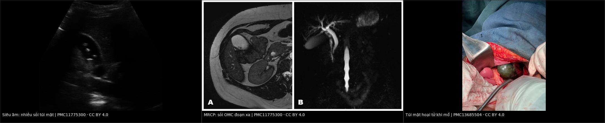
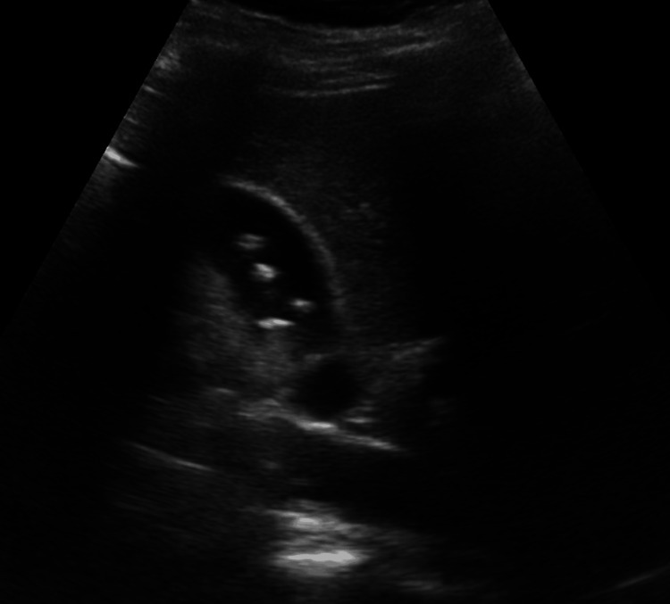
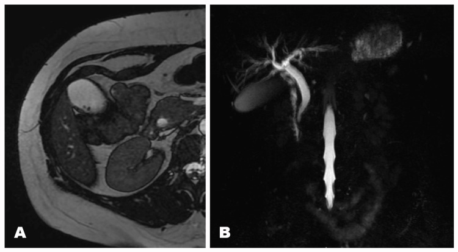
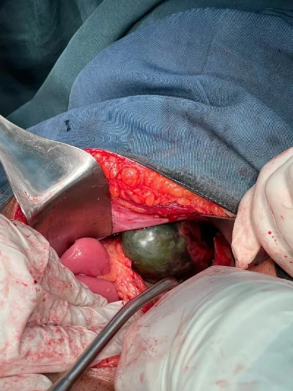

1925 — Viêm túi mật cấp ở thai phụ: cắt nội soi bất kể tam cá nguyệt, phân độ TG18, ERCP cho sỏi OMC và cái giá của "chờ sau sinh" / Acute cholecystitis in pregnancy
Tags: pattern:viem pattern:soi pattern:o-dich pattern:tac-nghen vung:tui-mat vung:thai-nhi protocol:sieu-am-bung protocol:MRI-khong-can-tu score:TG18
Mức chắc chắn (certainty): tổng hợp y văn (literature synthesis) — ghép hướng dẫn SAGES 2024 về nội soi trong thai (PMC11133165), đoàn hệ 48 thai phụ bệnh mật phức tạp (PMC12823679), ca viêm túi mật hoại tử có ảnh (PMC13685504), ca sỏi OMC – MRCP – stent có ảnh (PMC11775300), phân độ TG18 (PMC12986065), tổng quan sỏi OMC (PMC12647019) và nghiên cứu BORN về cắt túi mật/ERCP trong viêm tụy mật (PMC12606018). Số nào nguồn không nêu ghi "chưa rõ".
Câu chốt: viêm túi mật cấp là cấp cứu ngoại khoa không sản khoa phổ biến thứ 2 ở thai phụ, và SAGES 2024 khuyến cáo cắt túi mật nội soi thay cho điều trị nội khoa, bất kể tam cá nguyệt (khuyến cáo có điều kiện, bằng chứng thấp). Cái giá của "chờ sinh xong": 27% ca tái phát sau cơn đau quặn mật chuyển thành biến chứng (viêm túi mật, viêm đường mật, viêm tụy) và 29% ca trong đoàn hệ 48 người phải can thiệp trong vòng 90 ngày sau sinh (PMC12823679). Ở tam cá nguyệt III, cắt túi mật so với quý II làm tăng sinh non với AOR 7,2 (3,09–16,77) — nên quyết định phải sớm, không phải muộn (PMC11133165).
1. Tổng quan bệnh học – cơ chế hình ảnh
1.1 Vì sao thai phụ dễ có sỏi và dễ viêm túi mật (TẠI SAO)
- Dịch tễ: viêm túi mật cấp gặp ở 0,01–0,06% thai kỳ (SAGES 2024, PMC11133165); cắt túi mật là phẫu thuật bụng không sản khoa phổ biến thứ 2 sau cắt ruột thừa; riêng tại Mỹ ~30.000 thai phụ/năm có can thiệp vì bệnh mật (PMC12823679).
- Cơ chế 2 bước: estrogen làm gan tăng bài xuất cholesterol vào mật → mật quá bão hòa cholesterol; progesterone làm giảm co bóp túi mật và ứ trệ → bùn mật (sludge) và sỏi hình thành nhanh trong thai. Sỏi mật có ở 10–15% phụ nữ trưởng thành; sỏi OMC gặp ở 13,7% (11,8–15,9%) ca viêm túi mật cấp (PMC12647019).
- Vì sao viêm tiến triển nhanh: sỏi kẹt cổ túi → ứ mật + tăng áp lực trong thành túi → thiếu máu thành túi → viêm – hoại tử – thủng. Thai phụ có thêm tăng thể tích máu, giảm phản ứng viêm rõ rệt và chậm trễ chẩn đoán vì "đau bụng là chuyện của thai" → dễ vào viện ở giai đoạn hoại tử (gangrenous).
- Vì sao đau lan vai phải: kích thích phúc mạc hoành qua dây thần kinh hoành (C3–C5) — đau vai cùng bên là dấu hiệu của viêm phúc mạc khu trú, không phải "đau cơ".
- Vì sao can thiệp sớm lại an toàn hơn: thai phụ không được hưởng lợi từ "chờ đợi" — mỗi cơn đau quặn là một lần tăng nguy cơ biến chứng; ACOG nêu rõ không được từ chối hoặc trì hoãn phẫu thuật cần thiết vì lý do thai kỳ, bất kể tam cá nguyệt (dẫn trong PMC11133165).
1.2 Vì sao nhìn thấy — vật lý từng phương thức
- Siêu âm (bước 1): sỏi là cấu trúc tăng hồi âm + bóng lưng (sỏi cholesterol nhỏ có thể không có bóng); viêm túi mật là thành túi mật dày > 3 mm, dịch quanh túi mật, dấu Murphy siêu âm, túi căng. Siêu âm không tia xạ, làm được ngay tại giường — phù hợp nhất với thai.
- MRI/MRCP (khi nghi sỏi OMC): mật là dịch T2 sáng, sỏi là vùng mất tín hiệu trong lòng ống → MRCP cho bản đồ đường mật không cần cản quang, không tia xạ. MRCP không đánh giá được sỏi < 3 mm tốt bằng EUS; EUS gộp Se 0,97/Sp 0,90 cho sỏi OMC (PMC12647019) — nhưng EUS xâm lấn và cần gây mê.
- CT: chỉ dùng khi nghi biến chứng (thủng, áp-xe, viêm tụy hoại tử) hoặc sau mổ; tránh trong thai nếu không cần, vì liều tử cung tăng theo pha và kích thước thai.
- X-quang/fluoroscopy trong ERCP: dùng che chắn chì, giảm thời gian chiếu, chụp từng khung; ERCP không chống chỉ định trong thai khi có chỉ định giải áp đường mật (SAGES 2024).
1.3 Ngưỡng định lượng nằm lòng
| Đại lượng | Ngưỡng / con số | Ý nghĩa | Nguồn |
|---|---|---|---|
| Tần suất viêm túi mật trong thai | 0,01–0,06% | Bệnh hiếm nhưng không được bỏ sót | PMC11133165 |
| Thành túi mật | > 3 mm = dày | Tiêu chuẩn siêu âm chính | PMC11775300 |
| Sỏi OMC trong viêm túi mật cấp | 13,7% (11,8–15,9%) | Phải tầm soát OMC trước khi mổ | PMC12647019 |
| TG18 độ II | WBC > 18.000/µL, khối vùng hạ sườn phải, triệu chứng > 72 giờ, viêm hoại tử/áp-xe/viêm phúc mạc mật | Chuyển mổ sớm, bác sĩ có kinh nghiệm | PMC12986065 |
| TG18 độ III | Suy tạng: dopamine ≥ 5 µg/kg/phút hoặc norepinephrine, PaO₂/FiO₂ < 300**, **creatinin > 2,0 mg/dL, PT-INR > 1,5, tiểu cầu < 100.000/µL, rối loạn tri giác | Hồi sức + dẫn lưu túi mật trước, mổ sau | PMC12986065 |
| Thời điểm mổ độ I | Trong 72 giờ từ khởi phát | Mổ sớm giảm biến chứng | PMC12986065 |
| Tam cá nguyệt III vs II | Sinh non AOR 7,2 (3,09–16,77) | Càng muộn càng cân nhắc kỹ | PMC11133165 |
| Tái phát thành biến chứng | 27% sau cơn đau quặn mật | "Chờ sau sinh" không miễn phí | PMC12823679 |
2. Mẫu hình + chẩn đoán phân biệt theo vị trí (gamut)
- Đau hạ sườn phải + sốt + Murphy dương: viêm túi mật cấp (gamut số 1).
- Đau hạ sườn phải từng cơn, không sốt, tự hết: đau quặn mật — có thể theo dõi nhưng tái phát tới 27% thành biến chứng.
- Đau + vàng da + sốt/rét run: sỏi OMC/viêm đường mật — cần MRCP/EUS + ERCP, không chỉ cắt túi mật.
- Đau thượng vị lan sau lưng + nôn + amylase/lipase tăng: viêm tụy do sỏi — ưu tiên hồi sức, ERCP nếu tắc; cắt túi mật sau (PMC12606018).
- Đau hạ sườn phải + tăng huyết áp + protein niệu + tiểu cầu giảm: HELLP/preeclampsia — không mổ túi mật; xử trí sản khoa.
- Vàng da + hạ đường huyết + rối loạn đông máu ở quý III: gan nhiễm mỡ cấp do thai (AFLP) — cấp cứu sản khoa, không phải mật.
- Đau hố chậu phải/thượng vị + sốt: viêm ruột thừa (bài 145) — ruột thừa bị đẩy lên, dễ nhầm.
- Đau hông + tiểu máu: sỏi niệu (bài 1818, 1922).
3. Bảng so sánh phân biệt (ma trận đối chiếu)
| Thực thể (entity) | Hình ảnh điển hình | Chốt vào (rule-in) | Chốt loại (rule-out) | Gợi ý xác nhận |
|---|---|---|---|---|
| Viêm túi mật cấp trên sỏi | Sỏi + thành > 3 mm + dịch quanh túi + Murphy siêu âm | Sỏi + thành dày + đau khu trú + sốt/bạch cầu tăng | Thành mỏng, không dịch, không sỏi → đau quặn đơn thuần | Siêu âm; CT/MRI nếu biến chứng |
| Sỏi OMC / viêm đường mật | Ống mật chủ giãn + sỏi mất tín hiệu trên MRCP | Vàng da + giãn OMC + sỏi trên MRCP/EUS | OMC không giãn, không sỏi → loại trừ tắc | MRCP/EUS; ERCP điều trị |
| Viêm tụy do sỏi | Tụy phù, dịch quanh tụy, lipase > 3× ULN | Đau thượng vị lan lưng + lipase tăng + sỏi | Lipase bình thường → không viêm tụy | CT/MRI; ERCP nếu tắc |
| HELLP / preeclampsia | Gan có thể hồ máu dưới bao, không sỏi | HA ≥ 140/90 + protein niệu + tiểu cầu < 100.000 | Không tăng HA, không protein niệu → ít nghĩ | Xét nghiệm sản khoa; không mổ mật |
| Gan nhiễm mỡ cấp (AFLP) | Gan giảm đậm độ lan tỏa, không sỏi | Vàng da + hạ đường huyết + rối loạn đông máu | Không rối loạn đông, không hạ đường huyết | Xét nghiệm; cấp cứu sản khoa |
| Viêm ruột thừa | Ruột thừa > 6 mm, không đè xẹp, vị trí cao | Đau hố chậu phải/thượng vị + sốt + không đè xẹp | Túi mật bình thường, không sỏi | Siêu âm/MRI (bài 145, 1817) |

*Hình 1 — Trái: siêu âm túi mật, nhiều sỏi cholesterol 4–9 mm (một số không có bóng lưng). Giữa: MRI/MRCP — giãn ống mật chủ + sỏi đoạn xa (mất tín hiệu trong lòng ống). Phải: hình mổ — túi mật hoại tử (gangrenous), thành đen–xanh, hoại tử lan rộng. Nguồn: PMC11775300 Fig. 1–2 và PMC13685504 Fig. 1, CC BY 4.0; ảnh ghép letterbox, không crop/kéo giãn.*4. Protocol + phân độ + quyết định theo tam cá nguyệt
4.1 Chẩn đoán
- Siêu âm bụng (thành túi mật, sỏi, dịch quanh túi, Murphy) — bước 1, không tia xạ.
- Xét nghiệm: WBC, CRP, bilirubin, ALT/AST/ALP, lipase/amylase, đông máu, chức năng thận.
- MRCP khi bilirubin/ALP tăng hoặc OMC giãn trên siêu âm; EUS nếu MRCP không kết luận và cần can thiệp.
- Không chọc hút túi mật qua da (PTC) thường quy ở thai phụ còn mổ được — chỉ khi TG18 độ III, không chịu được mổ.
4.2 Phân độ TG18 và đường điều trị
flowchart TD
A[Thai phụ đau hạ sườn phải + sốt] --> B[Siêu âm: sỏi + thành > 3 mm + dịch quanh túi]
B --> C[Phân độ TG18: WBC, tạng, biến chứng]
C -->|Độ I| D[Cắt túi mật nội soi trong 72 giờ]
C -->|Độ II| E[Cắt nội soi sớm, bác sĩ có kinh nghiệm]
C -->|Độ III| F[Hồi sức + dẫn lưu túi mật, mổ sau khi ổn định]
B --> G{Bilirubin tăng hoặc OMC giãn?}
G -->|Có| H[MRCP/EUS → ERCP lấy sỏi OMC]
H --> D
D --> I[Kháng sinh + giảm đau; theo dõi sản khoa]
4.3 Tam cá nguyệt — bằng chứng và cách chọn
| Tam cá nguyệt | Khuyến cáo | Số liệu / lý do |
|---|---|---|
| Quý I | Cắt nội soi được nếu có chỉ định; ưu tiên nội khoa chỉ khi đau quặn đơn thuần | Không có bằng chứng mổ làm tăng dị tật; ACOG: không trì hoãn mổ cần thiết |
| Quý II | Thời điểm thuận lợi nhất (tử cung chưa quá lớn, thai đã qua tạo cơ quan) | 64,7% ca can thiệp trong đoàn hệ 48 người rơi vào quý II (PMC12823679) |
| Quý III | Vẫn mổ được khi viêm túi mật cấp; đau quặn đơn thuần có thể chờ | Cắt túi mật quý III vs quý II: sinh non AOR 7,2 (3,09–16,77); 50% (2/5) ca quý III sinh non trong đoàn hệ nhỏ (PMC12823679) |
| Sau sinh | Mổ ngay khi có chỉ định — không cần chờ cai sữa | 29% ca phải can thiệp trong 90 ngày sau sinh nếu trì hoãn (PMC12823679); thuốc mê/giảm đau tương thích cho bú (bài 1922) |
4.4 Kỹ thuật mổ và ERCP
- Cắt túi mật nội soi (LC): vào bụng mở (Hasson), pneumoperitoneum 10–12 mmHg (không quá 15), nghiêng trái 15° để giảm chèn ép tĩnh mạch chủ, không thao tác tử cung, theo dõi tim thai trước–sau mổ. Trong đoàn hệ 48 ca, toàn bộ cắt túi mật đều nội soi, 0 ca chuyển mổ mở (PMC12823679).
- ERCP cho sỏi OMC có triệu chứng: SAGES 2024 khuyến cáo ERCP thay cho mổ mở ống mật chủ (khuyến cáo có điều kiện, bằng chứng thấp); ERCP + cắt túi mật nội soi là chuẩn "hai thì" hoặc một thì. Biến chứng cần nhớ: viêm tụy sau cắt cơ vòng 9,7% (PMC12647019) — theo dõi lipase sau thủ thuật.
- Kháng sinh: cephalosporin phổ rộng ± metronidazole; điều chỉnh theo kháng sinh đồ; không kéo dài sau khi đã kiểm soát ổ nhiễm.
5. Biến thể bình thường và cạm bẫy
- "Chỉ mổ ở quý II": đây là quan niệm cũ — SAGES 2024 và ACOG không giới hạn tam cá nguyệt; trì hoãn vì "chờ quý II" làm tăng biến chứng 27% và can thiệp sau sinh 29%.
- Siêu âm bình thường trong 24 giờ đầu: thành túi mật có thể chưa dày rõ; đau + sốt + sỏi vẫn đủ để điều trị; lặp siêu âm sau 12–24 giờ nếu chưa chắc.
- Sỏi cholesterol nhỏ không có bóng lưng: dễ bỏ sót trên siêu âm — tìm dấu Murphy siêu âm và dịch quanh túi.
- Bỏ sót sỏi OMC: 13,7% ca viêm túi mật cấp có sỏi OMC — phải kiểm tra bilirubin/ALP + MRCP trước khi chỉ cắt túi mật.
- Túi mật hoại tử: ca 26 tuổi thai 25 tuần, sau 24 giờ điều trị nội khoa tình trạng xấu đi, mổ mở thấy túi mật hoại tử; mẹ và thai đều ổn (PMC13685504) — không chờ "đủ 48–72 giờ kháng sinh" khi bệnh nhân xấu đi.
- ERCP ở thai: không phải chống chỉ định; che chắn + giảm fluoroscopy, nhưng không được vì sợ tia mà bỏ tắc đường mật có nhiễm.
- Sau sinh: đừng hoãn mổ vì đang cho bú — thuốc mê và giảm đau tương thích (bài 1922); ngừng bú oan làm tăng nguy cơ viêm vú và giảm sữa.
6. Tự lượng giá — Blind Quiz
Ca 1 — Thai 28 tuần, đau hạ sườn phải từng cơn sau ăn; siêu âm thấy nhiều sỏi nhỏ, thành túi mật 2 mm, không dịch quanh túi.

- Câu hỏi: (1) Chẩn đoán? (2) Có chỉ định mổ ngay không? (3) Theo dõi thế nào?
Bấm để hiện đáp án (findings + chẩn đoán)
- Findings: nhiều sỏi cholesterol 4–9 mm, một số không có bóng lưng; thành túi mật 2 mm (bình thường), không dịch quanh túi.
- Chẩn đoán: đau quặn mật (biliary colic), chưa phải viêm túi mật cấp.
- Quyết định: có thể theo dõi nội khoa (giảm đau, ăn ít mỡ), nhưng tư vấn nguy cơ tái phát — 27% tái phát chuyển thành biến chứng; nếu đau tái diễn nhiều lần, cắt túi mật nội soi kể cả trong thai.
- Nguồn ảnh: Cureus 2024, PMC11775300, Fig. 1, CC BY 4.0.
Ca 2 — Cùng bệnh nhân, bilirubin tăng nhẹ, siêu âm OMC 8 mm; MRCP có sỏi đoạn xa. Bước tiếp theo?

- Câu hỏi: (1) Mô tả findings? (2) Chọn ERCP hay mổ mở ống mật chủ? (3) Có phải ngừng thai kỳ để làm thủ thuật?
Bấm để hiện đáp án (findings + chẩn đoán)
- Findings: (A) T2 axial: sỏi nhỏ trong túi mật; (B) MRCP: giãn ống mật chủ với sỏi đoạn xa (mất tín hiệu trong lòng ống).
- Chẩn đoán: sỏi OMC có triệu chứng trên nền sỏi túi mật.
- Lựa chọn: ERCP (SAGES 2024 khuyến cáo ERCP thay mổ mở OMC); sau đó cắt túi mật nội soi cùng đợt hoặc sau sinh tùy tam cá nguyệt.
- Không ngừng thai kỳ: thủ thuật được làm dưới che chắn, giảm fluoroscopy; theo dõi viêm tụy sau ERCP (9,7%).
- Nguồn ảnh: PMC11775300, Fig. 2, CC BY 4.0.
Ca 3 — Thai 25 tuần, viêm túi mật cấp; sau 24 giờ kháng sinh vẫn sốt, đau tăng, bạch cầu 21.000/µL. Mổ hay tiếp tục nội khoa?

- Câu hỏi: (1) Phân độ TG18? (2) Vì sao không chờ thêm? (3) Kết cục của ca này?
Bấm để hiện đáp án (findings + chẩn đoán)
- Findings: túi mật căng, thành đen–xanh, hoại tử lan rộng; mô bệnh xác nhận viêm túi mật hoại tử.
- TG18: độ II (WBC 21.000/µL > 18.000, triệu chứng kéo dài, viêm hoại tử) — chỉ định mổ sớm; nếu có suy tạng thì là độ III và phải hồi sức/dẫn lưu trước.
- Vì sao không chờ: thất bại nội khoa sau 24 giờ + bạch cầu tăng là dấu hiệu hoại tử/thủng sắp xảy ra; chờ thêm làm tăng nguy cơ viêm phúc mạc mật, nhiễm khuẩn huyết.
- Kết cục: ca thật được mổ mở lấy túi mật, hồi phục không biến chứng và sinh thai đủ tháng khỏe mạnh (PMC13685504).
- Nguồn ảnh: Case Rep Surg 2026, PMC13685504, Fig. 1, CC BY 4.0.
Bài liên quan chéo
- 500 – Tổng quan hệ Vú & Sản phụ khoa
- 1817 – Đau bụng cấp ở thai phụ: protocol MRI không cản từ
- 145 – Viêm ruột thừa trong thai kỳ
- 1922 – Sỏi niệu ở bà mẹ sau sinh đang cho con bú
- 130 – Túi mật: viêm, sỏi, polyp
- 6146 – Sỏi túi mật ở trẻ em
Ảnh
1925_viem-tui-mat_US_PMC11775300-Fig1.jpg— siêu âm nhiều sỏi cholesterol (PMC11775300, Fig. 1, CC BY 4.0).1925_viem-tui-mat_MRCP_PMC11775300-Fig2.jpg— MRI + MRCP: sỏi OMC đoạn xa (PMC11775300, Fig. 2, CC BY 4.0).1925_viem-tui-mat_mo_PMC13685504-Fig1.jpg— túi mật hoại tử khi mổ (PMC13685504, Fig. 1, CC BY 4.0).composite_chan-doan.jpg— ảnh ghép 3 bước, letterbox nền đen, CC BY 4.0.
Không dùng để chẩn đoán độc lập khi chưa có người hướng dẫn.